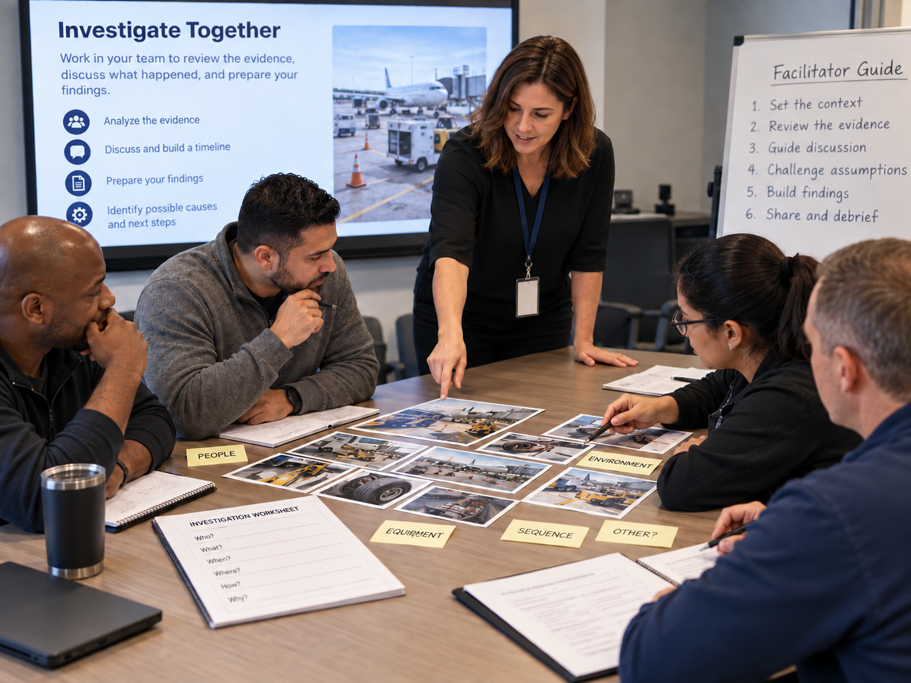
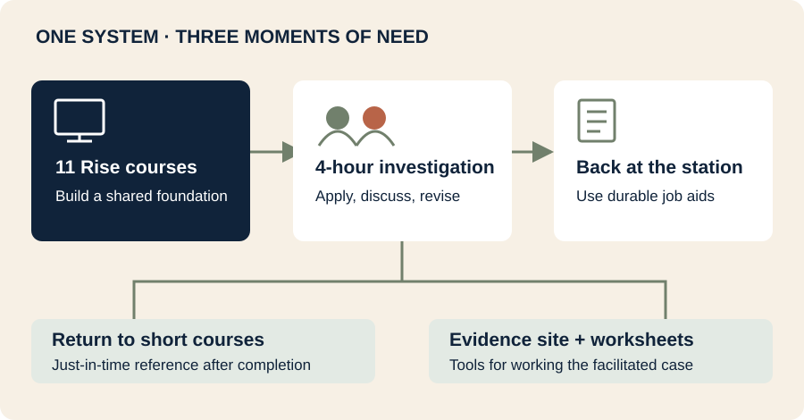
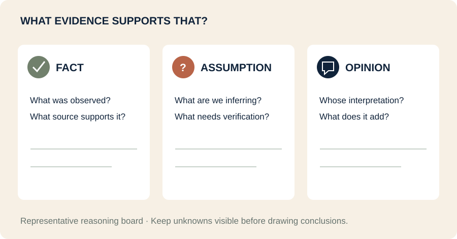
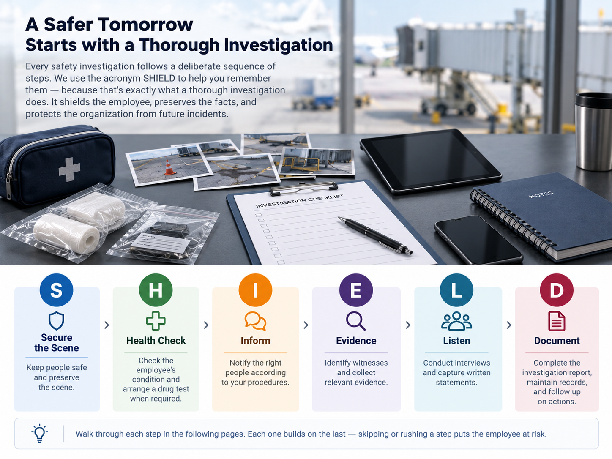
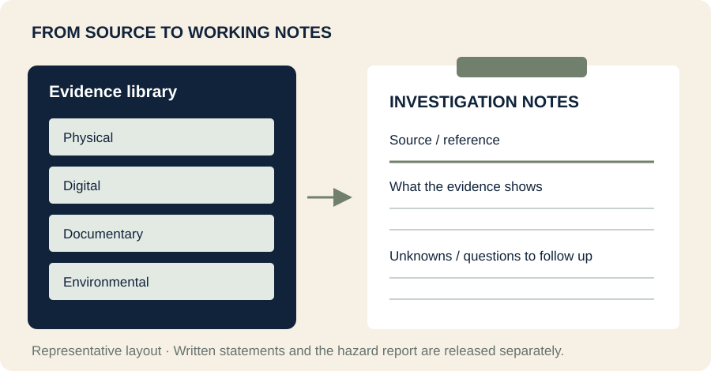
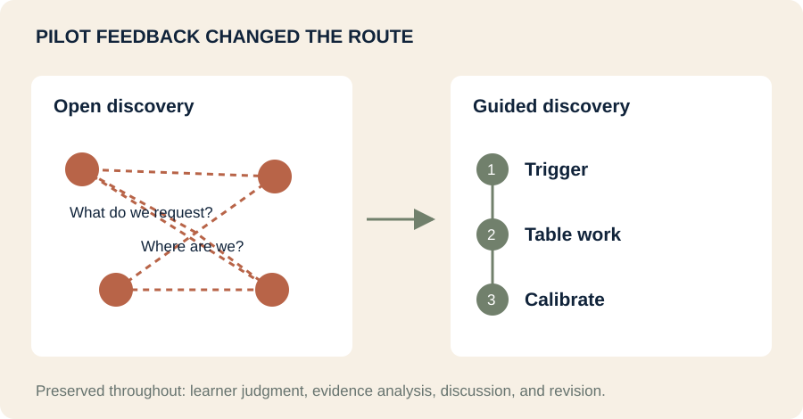

A guided look at the learning architecture, representative interactions, and design decisions behind a multi-part safety investigation program.
About this sample The original client deliverables are proprietary and are not shown here. This portfolio sample uses fictionalized examples and upgraded visual treatment while preserving documented instructional approaches and design decisions.

What this sample shows
A connected learning system.
The program included 11 self-paced ELT courses built in Rise 360, followed by a facilitator-led ILT. The Rise courses served two purposes: they taught the investigation process and also functioned as short just-in-time references supervisors could return to when an incident occurred. Completion of the ELT sequence was a prerequisite to the ILT, where learners applied the content in a facilitated case.
Design judgment
Why this approach?
See where modality, sequence, interaction, and scope decisions came from.
Representative practice
How did learners think?
Experience selected patterns based on the actual instructional logic.
Iteration
What changed?
Follow the shift from an open discovery mechanic to guided discovery after pilot feedback.
Program architecture
ELT first. Facilitated ILT second.
Supervisors may go long periods without conducting an investigation. The architecture therefore separated three needs instead of forcing them into one format: instruction in 11 Rise 360 ELT courses, just-in-time reference after completion, and a facilitator-led ILT where learners applied the prerequisite knowledge to one investigation.
ELT · Rise 36011 short self-paced coursesInstruction + just-in-time referenceIntroduction, purpose, investigation types, steps, best practices, evidence, interviews, 5 W's, and report writing.
PrerequisiteComplete the Rise ELT sequence before ILTThe courses established process knowledge, shared vocabulary, and the investigation framework learners needed before facilitated application.
ILT · Facilitator led4-hour applied investigationLearners worked one case through first response, evidence, interviews, synthesis, report writing, and debrief with a facilitator controlling pacing and reveals.
ILT learning environmentA SharePoint evidence site, evidence-specific worksheets, interview/statement handouts, the Fact / Assumption / Opinion wall, 5 W’s chart, and staged facilitator-held evidence turned the ILT into an active investigation workspace.
Performance supportQuick references and durable job aids extended the learning back to the station.

Program architecture, drawn from the case-study design.
Behind the Design · Why separate ELT and ILT?The 11 Rise courses handled instruction and just-in-time reference. The facilitator-led ILT assumed that foundation was already in place and focused on application, ambiguity, discussion, and judgment. The ILT did not replace or continue the Rise courses; it asked learners to use what they had already learned.
ELT · Rise 360
Eleven short courses, built for instruction and just-in-time use
Each course addressed a specific part of the investigation process. Together they established the knowledge and language learners needed before attending the facilitator-led ILT. Because supervisors may not investigate often, the Rise courses also remained useful as short references at the moment of need.
Prerequisite to ILT. Learners completed the Rise ELT sequence before the facilitator-led investigation session. The ILT then focused on applying the process rather than reteaching the course content.
Rise course 1
Introduction to Safety Investigations
Introduced the curriculum, expectations, and investigation mindset.
Behind the Design · Purpose before varietyRise interactions were selected for what learners needed to do: flip cards to challenge assumptions, flashcards when learners should commit before seeing the answer, tabs for equal-weight categories, timelines for sequence, and concise custom interactions where the reasoning mattered more than scoring.
Requested teaching point · across ELT + ILT
Critical thinking was a throughline, not a separate lesson
The program repeatedly asked learners to slow down the first story, separate what is known from what is assumed, test conclusions against evidence, and revise when new information changes the picture.
ELT · Rise 360Build the thinking habitsFact vs. assumption, confirmation-bias awareness, evidence categories, 5 W’s, neutral interviewing, and objective report language created the reasoning foundation.
ILT · Facilitator ledUse those habits under ambiguityLearners worked a case where evidence arrived in stages, accounts conflicted, gaps remained visible, and their first interpretation had to survive scrutiny.
Central question“What evidence supports that?” was not assigned to one table role. Every learner was expected to test claims against evidence.
ReframeA deliberately held piece of evidence arrived after learners had formed an initial finding, forcing them to reconsider rather than defend the first story.

Representative reasoning board. This is not an original client worksheet.
Behind the Design · Teach the reasoning, not just the procedureThe course did not treat investigation as a checklist alone. The procedural framework gave learners structure; the critical-thinking design asked them to verify, distinguish facts from assumptions and opinions, notice gaps, compare sources, and change their conclusion when the evidence required it.
ELT · Rise 360 example
SHIELD organized the investigation steps
The source process contained fourteen steps. For the learning experience, the steps were grouped only where they belonged together operationally, while established field language such as Freeze the Scene was preserved.
SSecure the Scene Freeze and assess.
HHealth Check Employee condition and care.
IInform Required notifications.
EEvidence Collect and preserve.
LListen Interviews and statements.
DDocument Reports and follow-up.

Portfolio visualization of the framework. This is explanatory evidence, not an original client screenshot.
Behind the Design · Simplify without distortingThe first constraint was fidelity: do not rename or combine steps just to make a mnemonic work. The final framework emerged only after testing which steps could be grouped logically while keeping the language supervisors already used.
ELT · Rise 360 representative sample
Evidence in context
This upgraded portfolio interaction represents the scene-based evidence work used in the Rise ELT. It is not an ILT activity or an original client screenshot.
A representative portfolio interaction based on the evidence-identification approach used in the original program. The client scene and records are proprietary, so this sample uses fictionalized content while preserving the instructional logic.
Representative interaction
What would you examine first?
Open each evidence category to see what it can contribute before reaching a conclusion.
Physical evidence
What it contributesObjects, marks, equipment position, damage, and other tangible conditions can help reconstruct what happened.
Digital evidence
What it contributesTime stamps, device records, system logs, photos, and other electronic records can confirm sequence and timing.
Testimonial evidence
What it contributesWitness accounts add perspective, but wording and interview technique affect what is surfaced and how confidently it can be used.
Documentary evidence
What it contributesForms, procedures, maintenance records, prior reports, and other records can confirm requirements and history.
Environmental evidence
What it contributesLighting, weather, layout, noise, traffic flow, and other conditions can influence what happened without being obvious in the first story.
Start with the scene, not the story.The goal is to collect and compare evidence before settling on an explanation.
Behind the Design · Judgment before explanationThe original Rise 360 ELT asked supervisors to inspect a situation and decide what evidence mattered before explanatory content reinforced the categories. That keeps the interaction focused on observation and judgment rather than recognition of a definition.
ILT · Facilitator-led guided discovery
The ILT applied the Rise prerequisite knowledge through an investigation, not a lecture
Learners entered the ILT after completing the 11 Rise 360 courses. The facilitator did not reteach those courses from the front of the room. The session moved between short guided whole-group moments and longer table-work blocks where learners used the evidence site, worksheets, interviews, and discussion to work the case.
Two delivery modes. Guided whole-group moments oriented the room, introduced a trigger, played interviews, or delivered a timed reveal. Table-work blocks carried the investigation itself.
Guided whole groupArrival + The CallThe facilitator framed the incident, surfaced assumptions, reactivated the eLearning, and established the first known facts and immediate actions.
Table workEvidenceTables opened evidence on the SharePoint site, captured findings on the matching worksheet, and sorted claims into fact, assumption, or opinion.
Whole group + tableListenThe room watched poor and effective interviews, then tables captured what the technique surfaced, lost, contradicted, or left uncertain.
Whole group + tableSynthesis + ReframeLearners reconciled evidence, named gaps, and then received the held hazard report that tested the initial story.
Table workDocumentEach learner drafted the report, then compared reasoning in small group and whole group discussion.
Behind the Design · Guided discovery after the pilotThe redesign did not replace discovery with lecture. It changed who controlled the pacing and when evidence appeared. The facilitator supplied orientation and calibration; learners still did the investigation, made judgments, documented evidence, compared accounts, and revised findings.
The site and worksheets made the case something learners worked, not something they watched
The redesigned ILT used a dedicated SharePoint evidence site as the case environment. Tables accessed the evidence site on their phones, opened evidence by category, and completed matching paper worksheets while the facilitator controlled the sequence of the session rather than narrating the answers.
SharePoint evidence site
Four evidence pages + reference
Physical, Digital, Documentary, and Environmental pages held the case evidence. The site remained open once released to the tables. Interview statements and the pivotal hazard report were intentionally held outside the site for later facilitated reveals.
Learner worksheets
Capture, classify, compare
Each evidence category had a capture worksheet. Separate materials supported Interviews & Statements and Report Writing. The worksheets required learners to record what the evidence showed, distinguish verified facts from assumptions or claims, and carry findings forward into synthesis and reporting.
1 · Trigger
One question. Minimal talking.
The facilitator posed a focused question and pointed tables to the relevant evidence.
2 · Table work
This is where the time lived.
Small groups opened the site, examined evidence, completed the worksheet, debated what was supported, and identified what remained unknown.
3 · Calibrate
Brief whole-group correction.
The facilitator sampled one or two tables, corrected course where needed, made an eLearning callback if useful, and moved the investigation forward.
Deliberate holdbacks preserved discovery. The four written statements were handed out during Listen. The prior hazard report was facilitator-held until the Reframe because revealing it earlier would collapse the central critical-thinking turn.

Representative evidence workspace and worksheet, based on the documented learning approach.
Behind the Design · Structure without doing the thinking for themThe post-pilot solution added orientation, pacing, and a repeatable Trigger → Table Work → Calibrate loop, but it did not convert the session into front-of-room instruction. The facilitator created the conditions for discovery; the evidence site and worksheets carried the learner work.
ILT · Facilitator-led representative sample
Same witnesses. Two interview approaches.
The original facilitator-led ILT used two witnesses. Learners first evaluated the initial interviews without being told what was ineffective, then compared them with stronger follow-up interviews using the same incident participants. The witnesses stay constant; the interviewing technique changes.
1. Initial interviews
Initial interview
The interviewer narrows the story too quickly.
Interviewer: You were moving too fast when the equipment shifted, right?
Witness: I guess. Everything happened pretty fast.
Interviewer: So speed was the problem.
Leading language, accepting first answers, and stating assumptions aloud can narrow what each witness provides.
2. Follow-up interviews
Follow-up interview
The interviewer opens the account instead of supplying it.
Interviewer: Start with what you remember just before the equipment moved.
Witness: I was watching the loader clear the lane. I heard the radio, looked toward the gate, and then saw the cart enter the lane.
Interviewer: What did you see or hear after that?
Open prompts, neutral follow-up questions, and clarification produce more usable evidence without supplying the answer.
3. Compare what the interviews produced
Compare the evidence
What changed when the technique changed?
Certain: The witness saw the cart enter the equipment lane.
Uncertain: Whether the radio call distracted the witness before the movement.
Contradicts the first account: The stronger interview does not support the interviewer's early conclusion that speed was the cause.
This portfolio example is fictionalized. The original design pattern used poor and stronger interviews with the same witnesses, then asked learners to compare what each technique surfaced.
Behind the Design · Control the variableThe same witnesses are used across the matched poor and stronger versions so personality and background stay constant. Interviewing technique becomes the variable learners observe, compare, and evaluate.
ELT · Rise 360 representative sample
What belongs in the report?
The original design moved away from scoring this activity. Statements are already sorted so the learner can focus on the reasoning behind clear, verifiable reporting.
Vague
The employee was careless.
Why this wording mattersThis labels behavior without stating what was observed. A reader cannot verify what “careless” means.
The area was unsafe.
Why this wording mattersThis gives a conclusion but no observable detail. Replace it with the action, location, timing, or condition that supports the conclusion.
Specific
The cart entered the marked equipment lane before the belt loader had cleared the area.
Why this wording mattersThis describes an observable action and location without assigning intent or blame.
A warning cone was lying on its side near the work area. The time it was moved is not yet known.
Why this wording mattersThis separates what was observed from what still needs to be verified, which keeps the report factual.
Behind the Design · Explanation over scoringThe learner does not need another sorting game here. The instructional value is in seeing why one statement is verifiable and another is not, so the portfolio version keeps the categories visible and makes the reasoning selectable.
ILT design evolution
The redesign preserved discovery and changed the scaffolding
Before pilot
Highly open discovery
Learners had to determine what evidence to request, then use QR/passcode mechanics to unlock it. The format intentionally withheld structure, but new leaders were not always sure where they were in the investigation process or what to ask for.
After pilot
Facilitated guided discovery
The case opened at the first call. Short whole-group moments established orientation; evidence moved to a shared SharePoint site; tables worked category-specific worksheets; and the facilitator used brief calibrations and staged reveals instead of delivering the investigation from the front of the room.
What stayed: learner discovery, evidence analysis, ambiguity, table discussion, interview comparison, synthesis, report writing, and the late evidence reveal that forced reconsideration.

Design evolution after the pilot. Learner judgment remains central.
Behind the Design · Retiring my own mechanic, not the learning strategyThe pilot did not show that discovery was wrong. It showed that the original mechanic asked learners to navigate too much uncertainty before they had enough process orientation. The redesign kept the critical-thinking demand and learner ownership while adding clearer structure, pacing, and access to the evidence.
Performance support
Support beyond the courses
The program extended beyond the 11 Rise 360 ELT courses and the facilitator-led ILT. Stable, reusable job aids supported supervisors after training without tying the materials to systems that were already changing.
Job aids
Designed for the moment of need
Quick-reference materials included first-hour guidance, report support, and scene/investigation checklists that supervisors could take back to the station.
Scope discipline
Avoid what would go stale
System-specific step-by-step guides were intentionally not built where the reporting tools were changing. The support focused on durable decisions and actions instead.
Behind the Design · Build support that lastsPerformance support was separated from course instruction and designed around stable behaviors, not transient system screens. This kept the job aids useful beyond a single software version.
Validation
What the current evidence shows
Current evidence includes post-session learner survey data, pilot feedback, facilitator observations, stakeholder and SME review, implementation evidence, and early post-launch feedback. The evidence supports learner reaction, confidence, intent to apply, and design/implementation decisions; it does not establish long-term operational outcomes.
14/14Strongly agreed the training was relevant to their role
14/14Strongly agreed it increased knowledge or skills for the job
13/14Agreed or strongly agreed they intended to apply the learning within 30 days
14/14Agreed or strongly agreed they had resources and support to apply it
Learner / manager feedback
Strong reaction to the facilitated experience
The manager reported that learners’ almost only complaint was wanting the session to be longer. Earlier pilot feedback also identified what needed redesign: pacing, process clarity, the mid-incident starting point, and technology friction.
Review evidence
Multiple review signals informed the build
The project record includes facilitator observations, SME review and approval of materials, labor-relations review of interview language, damage-team approval of timeline content, and a structured post-pilot action log.
Evidence boundary. These results support learner reaction, confidence, intent to apply, and implementation decisions. They do not establish improved investigation quality, fewer incidents, or other operational safety outcomes. Additional facilitator-led ILT reviews will be added as new evidence, not backfilled into earlier results.